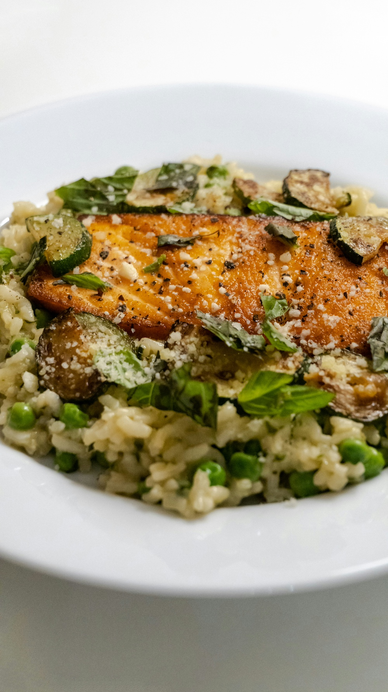

Home
Salmon Veggies & Rice

Photo by
Anh Nguyen
on
Unsplash
Description
Every time I have this dish it makes me feel so good and healthy. This is
a dish my mom used to make growing up and it brings back so many wonderful
memories of the times we share together. The combination of flavors in
this dish is truly a delight.
Salmon Ingredients
- Salmon
- Smoked Paprika
- Brown Sugar
- Garlic powder & Chili powder
- Extra Virgin Olive Oil
- Kosher Salt & Pepper
Bone Broth Ingredients
- Rice
- Bone Broth
- Optional: Extra Virgin Olive Oil
Vegetables
- Brussels Sprouts
- Butternut Squash
- Red Onion
- Dried & Fresh herbs
- Extra Virgin Olive Oil
- Kosher Salt and Black pepper
- Lemon Juice
- Balsamic Vinegar
- Arugula
Steps
-
Preheat the oven to 425℉ (218°C). Prepare 2 large baking sheets with
parchment paper for easy clean-up. Spray with cooking spray. Dice the
butternut squash, half the brussels sprouts, and slice the red onion.
-
Add the butternut squash, brussels sprouts, and red onion to one of the
large sheet pans in a single layer and coat them in the olive oil, fresh
thyme, rosemary, garlic powder, and salt and pepper. Bake in the
preheated oven for 30-40 minutes, until golden brown and fork tender.
Time will vary depending on the oven.
-
While the veggies are roasting, rinse the rice under cold water to get
rid of some of the excess starch. Add the rinsed rice and the bone broth
to a saucepan on high heat. Bring the rice and broth to a boil and add
the olive oil (if using). Give it a stir. Reduce the heat and cover the
pot with a lid. Simmer for 40 minutes for brown rice or 20 minutes for
white rice (check the package for the rice you are using because cooking
time will vary). Once it's done cooking, remove from the heat and let it
sit for 5 minutes before removing the lid. Fluff rice with a fork.
-
When the veggies are done add a squeeze of fresh lemon on top. Lower the
oven heat to 400℉ (200°C). While the oven cools, combine the brown
sugar, smoked paprika, chili powder, garlic powder, salt, and pepper in
a small bowl. Place salmon skin side down on the second sheet pan and
pat it dry with paper towels. Coat the salmon in the olive oil and add
the paprika mixture on top.
-
Rub the top of salmon until the the spice mix evenly coats it. Bake
12-15 minutes until the fish flakes easily with a fork. Cook time will
vary depending on the thickness of your salmon fillets.
-
Rub the top of salmon until the the spice mix evenly coats it. Bake
12-15 minutes until the fish flakes easily with a fork. Cook time will
vary depending on the thickness of your salmon fillets.
Hint: Don't open the lid on the rice while it's cooking!